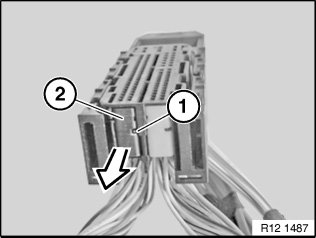
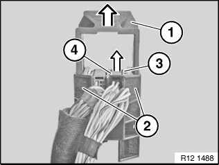
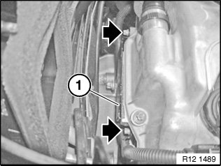

12 51 001 Replacing Wiring Harness Section for Engine
12 51 001 Replacing Wiring Harness Section For Engine (N52, N52K)

IMPORTANT: Read and comply with notes on protection against electrostatic discharge (ESD protection).

Necessary preliminary tasks:
- Read out fault memory of DME control unit
- Turn off ignition
- Follow instructions for disconnecting and connecting battery
Disconnect battery negative lead from battery and lay to one side
- Remove lower section of microfilter housing
- Remove intake air manifold
- Remove cylinder head cover
- Remove rear underbody protection

Unlock fasteners (1) from below and slide upwards approx. 10 mm.
Unlock locks (2) in direction of arrow.
Remove cover (3).

Unlock plug on control unit and disconnect.
Unlock tab (1), pull contact carrier (2) in direction of arrow out of housing.

Unlock slide (2) in bore holes (1) and pull out of housing.
Unlock tab (3), pull contact carrier (4) in direction of arrow out of housing.
Unlock and disconnect all plug connections of engine wiring harness section in electronics box.

Illustration shows cylinder head cover.
Release screws and remove holder (1).
Tightening torque 12 52 1AZ.
Work step
Unlock plug connections on control sensors and disconnect
Unlock plug on alternator and disconnect
Unlock plug connection on knock sensors and disconnect
Unlock plug on crankshaft sensor and disconnect
Unlock plug on starter motor and disconnect
Unlock plug connections on monitor sensors and disconnect
Unlock plug on oil condition sensor and disconnect

NOTE:
Check stored fault messages.
Delete fault memory.